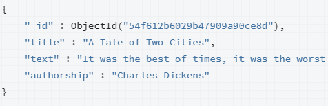

3. NoSQL
3.1. Bases de datos No SQL
3.1.1. ¿Qué son las bases de datos NoSQL?
Las bases de datos NoSQL (NoSQL significa "Not Only SQL" o "No Solo SQL") son sistemas de gestión de bases de datos diseñados para manejar tipos de datos y escenarios de aplicación que no se ajustan bien a las bases de datos relacionales tradicionales.
A diferencia de las bases de datos SQL, que utilizan un esquema fijo y tablas para almacenar datos, las bases de datos NoSQL utilizan diferentes modelos de datos y estructuras de almacenamiento flexibles.
3.1.2. Características de las bases de datos NoSQL:
-
Esquema flexible: NoSQL permite almacenar datos sin necesidad de un esquema predefinido.
-
Escalabilidad horizontal: Las bases de datos NoSQL están diseñadas para escalar horizontalmente.
-
Modelos de datos variados: Existen varios tipos de bases de datos NoSQL, incluyendo bases de datos de documentos, bases de datos de columnas, bases de datos clave-valor y bases de datos de grafos.
-
Alta disponibilidad: Las bases de datos NoSQL suelen garantizar la disponibilidad continua de los datos.
3.1.3. Ventajas de las bases de datos NoSQL:
-
Escalabilidad: Son ideales para aplicaciones web y móviles que requieren escalabilidad rápida y eficiente.
-
Flexibilidad: Pueden manejar datos no estructurados o semiestructurados.
-
Rendimiento: Ofrecen un rendimiento más rápido para ciertos tipos de consultas.
3.1.4. Desventajas de las bases de datos NoSQL:
-
Falta de estándares: La diversidad de modelos y sistemas NoSQL dificulta la elección y la migración entre sistemas.
-
Menos soporte para consultas complejas: No son ideales para aplicaciones que requieren operaciones complejas de tipo JOIN y agregación.
3.2. Tipos de bases de datos NoSQL:
3.2.1. Bases de datos de documentos:
- Almacenan datos en formato de documentos semiestructurados, como JSON o XML.
- Características:
- Una clave única para cada registro que normalmente suele ser un documento con una estructura simple como JSON o XML.
- Se apoya en la utilización de documentos para almacenar información.
- Los documentos se agrupan en colecciones.
- Modelado flexible, recomendado para aplicaciones web, móviles o rrss que varían constantemente.
- Escritura rápida y mayor rendimiento.

3.2.2. Bases de datos de clave-valor
- Almacenan datos comó pares clave y valor
- Características:
- En este tipo de modelos cada elemento tiene asociada una clave única
- Tiene asociada una clave única lo que permite un acceso muy rápido.
- Su objetivo es la escalabilidad y la disponibilidad.
- Operaciones básicas get, put, delete.
- Recomendado allí donde es necesario un acceso muy rápido en un volumen inmenso de datos.
- Sesiones
- E-shopping
- No existe un estándar para el manejo de datos.
- Un único método de acceso.

- Ejemplos:
3.2.3. Bases de datos columnas
- Almacenan datos en columnas en lugar de filas.
-
Características
- Cada entrada genera una columna
- Los datos están dispuestos uno debajo del otro
- Gira la BBDD orientada a filas


- En el disco duro los datos se muestran de manera unidimensional:
- 1,MongoDB,Documental,2,Cassandra,Key-value..
- 1,2,3;MongoDB,Cassandra,Redshift…
- Aconsejado para evaluación en BigData
- Desaconsejado en aplicaciones transaccionales
-
Ejemplos:
3.2.4. Bases de datos de grafos
- Almacenan datos como nodos y relaciones.
-
Características.
- Representan la información con grafos:
- Nodos: propiedades de los datos.
- Aristas: relaciones entre los objetos.
- Utilizan algoritmos especiales para realizar las búsquedas:
- Búsqueda en profundidad: el siguiente nodo más profundo.
- Búsqueda en anchura: va moviéndose entre los niveles.
- Resultados en tiempo real.
- Estructuras flexibles y ágiles
- Difícil de escalar
- Representan la información con grafos:
-
Ejemplos:
Recuerda
Cada tipo de base de datos NoSQL tiene sus propias características y casos de uso específicos. La elección dependerá de las necesidades de tu proyecto.
3.3. MongoDB
3.3.1. Conceptos Básicos
Los elementos de MongoDB son:
- Bases de Datos: Actúa cada una como un contenedor de alto nivel
- Colecciones: Una base de datos tendrá 0 o más colecciones. Una colección es muy similar a lo que entendemos como tabla dentro de un SGDB.
- Documentos: Las colecciones contiene 0 o más documentos, por lo que es similar a una fila o registro de un RDMS.
3.3.1.1. Documentos
El corazón de MongoDB es el documento, un conjunto ordenado de claves con valores asociados. Su representación como hemos nombrado en el tema anterior es en JSON, un formato muy intuitivo y que no pensamos que requiera mayor explicación. Este podría ser un ejemplo sencillo de un documento que guarda el nombre, apellidos y dedad de una persona. A la izquierda de los dos puntos el nombre del campo y a la derecha el valor.
{
nombre:”Jose Antonio”,
apellidos:”Guillem Benedito”,
edad:35
}
Las claves de los documentos: * No pueden ser nulas. * No pueden contener los caracteres . (punto) y $ (dólar). * Puede contener cualquiera de los demás caracteres UTF-8 existentes. * Son case-sensitive (sensible a mayúsculas y minúsculas), por lo que las claves “nombre” y “Nombre” son diferentes, y por tanto consideradas como campos diferentes. * Las claves dentro de un mismo documento deben ser únicas, no pueden duplicarse. Así por ejemplo el siguiente documento no es válido por tener dos veces la clave nota.
{
nombre:”Jose Antonio”,
nota:8.9,
nota:7.2
}
Cada documento en Mongo debe tener obligatoriamente un campo _id con valor único y que actuará como identificador único del documento. Es tan necesario este campo que cuando se guarda un documento sin especificarlo, Mongo automáticamente le asigna uno del tipo ObjectId.
3.3.1.2. Colecciones
Una colección es un grupo de documentos, es lo análogo a las tablas en el modelo relacional. Las colecciones tienen esquemas dinámicos, lo que significa que los documentos dentro de una colección pueden tener múltiples “formas”. Por ejemplo, los siguientes documentos podrían guardarse en la misma colección, a pesar de tener diferentes campos, y diferentes tipos de dato.
{ nombre:”Jose Antonio”, edad:35 }
{ username::”pepito”, type:6, active:true }
Hay algunas restricciones respecto a nombre que una colección puede tener:
- La cadena vacía (“”) no es un nombre válido.
- Lo puede contener el carácter null.
- No se pueden crear colecciones cuyo nombre empiece por “system.”, ya que es un prefijo reservado para colecciones internas.
- No debe contener el carácter $ (dólar).
3.3.2. Operaciones básicas
3.3.2.1. Inserción
Para insertar un documento en una colección, utilice el método:
db.alumno.insert( {"name":"Antonio Cuenca"})
El comando ha añadido automáticamente el campo _id de tipo ObjectId, ya que como hemos explicado, todo documento debe tener un identificador único. Pero el uso del tipo ObjectId para el campo _id no es obligatorio, podemos utilizar cualquier valor, siempre y cuando garanticemos su unicidad. A continuación insertamos una nueva alumna, especificando que su _id es el número 10 (tipo Long).
db.alumno.insert( { _id:NumberLong(10), name:"Raquel",apellidos:"Gutierrez Garcia"} )
Si queremos insertar múltiples documentos,podemos hacer la inserción más rápida utilizando batch inserts, que permiten insertar en bloque un array de documentos a la colección. Esto se consigue con solo pasar un array de objetos al comando insert.
db.numerosprimos.insert(
[{_id:2},{_id:3},{_id:5},{_id:7},{_id:11},{_id:13},{_id:17},{_id:19},{_id:23}] )
3.3.2.2. Borrado
Vaya con cuidado, eliminar colecciones completas es muy sencillo en Mongo. Esto borrará todo, tanto la colección como meta propiedades asociadas a ella o índices creados sobre campos. db.alumno.drop() Por otra parte, para eliminar solo documentos de una colección, tenemos el comando remove, que recibe como parámetro el criterio de borrado en forma de documento JSON. En ese caso, solo los documentos que cumplen el criterio se eliminarán de la colección.
db.numerosprimos.remove( {_id:23} )
3.2.2.3. Modificación
Para modificar un documento se utiliza el método update. Este método recibe dos parámetros, el primero es el criterio de actualización, y el segundo el modificador, que describe los cambios que deben realizarse.
Tenemos dos tipos de actualización. El cambio completo del documento o reemplazo y la modificación de algunos elementos del documento
Veamos un ejemplo de reemplazo. Creamos un elemento con los siguientes datos:
db.usuarios.insert({name:"jose",friends:32,enemies:2})
El documento seria:
{
"_id" : ObjectId("5386c4fdd73aa9d8f663acda"),
"name" : "jose",
"friends" : 32,
"enemies" : 2
}
Ahora lo reemplazamos:
db.usuarios.update( {name:"jose"}, {name:"jose",relationships: {friends:32,enemies:2}})
Y quedaría así:
{
"_id" : ObjectId("5386c4fdd73aa9d8f663acda"),
"name" : "jose",
"relationships" : {
"friends" : 32,
"enemies" : 2
}
}
Si lo que queremos es modificar algunos campos utilizaremos el insert, pero con modificadores. Veámoslos:
$set
Asigna el valor a un campo. Si el campo todavía no existe en el documento lo creará. Se utiliza en el segundo parámetro que se le pasa al comando update.
db.alumno.insert( { name:"Arturo", apellidos:"Leon Zapata" })
db.alumno.update( {name:"Arturo"}, { $set: {edad:17} })
Podemos darle valor a varios campos a la vez, simplemente informando los pares clave:valor separados por coma. En este ejemplo damos valor a tres campos diferentes con un solo comando.
db.alumno.update( {name:"Arturo"}, { $set:{nota:8.2,orden:12,actitud:"positiva"} })
$unset
Para eliminar cualquier campo de uno o varios documentos lo hacemos también con el comando update pero con el modificador $unset. En MongoDB es habitual utilizar los valores 1 y -1 para indicar verdadero y falso respectivamente. En este caso, al especificar valor 1 estamos diciendo que la clave entra dentro del conjunto de campos en los que queremos aplicar el $unset. De esta forma, si queremos eliminar el campo “edad” del documento que guarda la información del alumno “Arturo”, lo haríamos así.
db.alumno.update({name:"Arturo"},{$unset:{edad:1}})
$inc
Este modificador puede utilizarse para incrementar o decrementar el valor numérico de una clave existente o para crear una nueva si no existe.
db.alumno.update({name:"Arturo"},{$inc:{puntuacion:2}})
Otros operadores que podemos utilizar de forma similar son $mul, $min, $max y $currentDate.
db.alumno.update({name:"Arturo"},{$min:{puntuacion:3}})
El ejemplo de arriba modifica la puntuación si esta es menor que3
Ahora vamos a ver modificadores de arrays. $push Se utiliza para añadir elementos a un array. Si el array no existe lo crea con los elementos indicados en el push, y si ya existe los añade al final del array.
db.alumno.insert({name:"Sofia", apellidos:"Alarcon Sevilla"})
db.alumno.update({name:"Sofia"},
{$push:{"asignaturas":{name:"Matematicas", nota:9.1}}}
)
$pull
Hay varias formas de eliminar elementos de un array. Cuando queremos borrar elementos basados en algún criterio, el modificador adecuado es $pull. Partimos de un array y borraremos elementos
db.lists.insert({"todo": ["lavar platos", "colada", "tender"]})
db.lists.update({},{$pull:{"todo":"colada"}})
$pop
Para eliminar el primer o último elemento del array. Para eliminar el último elemento del array:
db.lists.update({},{$pop:{todo:1}})
db.lists.update({},{$pop:{todo:-1}})
Upserts
Un upsert es un tipo de update espcial. Si no se encuentra ningún documento que haga matching con el criterio del update, entonces se creará un nuevo documento combinando el criterio y lo que se quiere actualizar. Si se encuentra un documento que haga matching se actualizará normalmente. Para decirle a MongoDB que queremos hacer un upsert, solo hay que pasar al comando update un tercer parámetro, con valor true. Esto significa que el update se comportará como hemos explicado que lo hace el upsert.
update({...},{...},true)
db.alumno.update({name:"Sofia"},
{$set:{apellidos:"Alarcon Revilla"}},
true)
Multiples Documentos
Para modificar múltiples documentos, en el tercer parámetro del update indicaremos {multi: true}.
db.books.update({lang:"en"},
{$inc: {price: 50.00}},
{multi:true})
3.3.3.Consultas
El método find es el que se utiliza para hacer queries en Mongo. Es el equivalente al comando select en el modelo relacional. Al consultar una colección, Mongo nos devolverá un subconjunto de documentos, que variará desde el conjunto vació hasta la colección completa. Find tiene varios parámetros de entrada, el primero de ellos especifica los documentos que queremos recuperar, esto es, el criterio de búsqueda.
db.coleccion1.find({ clave1:valor1 })
El valor por defecto para este primer parámetro es {}, que significa “cualquier documento”. Por tanto una query como db.coleccion1.find({ }) devolverá todos los documentos de la colección coleccion1. Como es el valor por defecto para el criterio de la consulta es equivalente hacer find({ }) y find( ).
db.alumno.find({edad:17})
db.alumno.find({name:"Antonio"})
Igual que en SQL podemos especificar los campos que queremos recuperar (select campo1, campo2, campo3 from tabla ... ), podemos hacerlo también en Mongo. Para ello solo tenemos que pasar un segundo parámetro al método find, en el que decimos los que queremos.
db.coleccion1.find({ },{ clave3:1, clave4:1 })
db.coleccion1.find({ },{ clave3:0, clave4:0 })
3.3.3.1 Operadores de comparación
MongoDB permite utilizar los siguientes operadores de comparación: * $lt (less than), se corresponde con la condición < (menor estricto). * $lte (less than or equal), se corresponde con la condición <= (menor o igual). * $gt (greather than), se corresponde con la condición > (mayor estricto). * $gte (greather than or equal), se corresponde con la condición >= (mayor o igual).
clave: { $operador: valor }
Así si por ejemplo queremos recuperar los libros con un precio mayor que 10 lo haríamos utilizando el operador $gt sobre el campo precio:
db.libro.find({"precio":{$gt:10}},{titulo:1,precio:1})
3.3.3.2. Operadores lógicos
$in clave: { $in: [valor1, valor2, valorN] } Recupera documentos cuyo campo clave esté entre alguno de los valores especificados en el array, esto es, [ valor1, valor2, valorN ].
db.libro.find({editorial:{$in:["Debolsillo","Planeta","Gigamesh"]}},{titulo:1,editorial:1})
$nin clave: { $nin: [valor1, valor2, valorN] } Recupera documentos cuyo campo clave NO esté entre alguno de los valores especificados en el array, esto es, [ valor1, valor2, valorN ].
db.libro.find({editorial:{$nin:["Debolsillo","Planeta","Gigamesh"]}},{titulo:1,editorial:1})
$or $or: [ {clave1:valor1}, {clave2:valor2}, {claveN:valorN} ] Con el siguiente find, vamos a recuperar aquellos documentos que estén en stock (enstock:false) o que tengan editorial (editorial:null).
db.libro.find({$or:[{enstock:false},{editorial:null}]},{titulo:1,editorial:1,enstock:1})
$nor $nor: [ {clave1:valor1}, {clave2:valor2}, {claveN:valorN} ] Con el siguiente find, vamos a recuperar aquellos documentos que no estén en stock (enstock:false) o que no tengan editorial (editorial:null).
db.libro.find({$nor:[{enstock:false},{editorial:null}]},{titulo:1,editorial:1,enstock:1})
$not
$not es lo que se conoce como un metacondicional, que son opeadores que pueden aplicarse por encima de cualquier otro criterio. Su sintaxis es sencilla, solo hay que ponerlo “fuera” de aquello que queremos negar. $not: { criterio } Y así directamente podemos recuperar por ejemplo, documentos que no tengan 480 paginas.
db.libro.find( { paginas: {$not: { $eq:480 } } },{titulo:1,paginas:1} )
$exist
El operador $exists se utiliza para comprobar los documentos que tienen informado o no un campo determinado. Su sintaxis es la siguiente: clave: { $exists: boolean} Donde boolean puede ser true o false. En el caso de true devuelve documentos que tienen informado un campo, aunque su valor sea null. Este operador es útil porque debido a la ausencia de definición de esquema de datos de mongo, cada documento de una misma colección puede tener los campos que requiera, y al hacer consultas puede que no nos devuelva ciertos documentos bien porque no entra dentro de los valores exigidos, bien porque el campo no está definido. Veamos un ejemplo con dos comandos find donde utilizamos el operador $exists con ambos valores.
db.libro.find({paginas:{$exists:true}},{paginas:1})
Expresiones regulares
MongoDB incluye el trabajo con expresiones regulares de forma nativa. Ejemplo: Recuperamos los libros del autor Posteguillo, sin preocuparnos por mayúsculas y minúsculas, haríamos esta consulta.
db.libro.find({autor:/posteguillo/i},{titulo:1,autor:1}).pretty()
Búsqueda de texto
En MongoDB, podemos realizar búsquedas de texto usando el índice de texto y el operador $text. Pasos:
Primero se crea un índice de texto en los campos para realizar la búsqueda de texto.
db.books.createIndex({"title":"text"}) //--- Un campo//
db.books.createIndex({"title":"text","autor":"text"}) //--- Varios campos//
Luego se realiza la busqueda con $text. La expresión $text tiene la siguiente sintaxis:
{
$text:
{
$search: <string>,
$lenguage: <string>, Opcional
$caseSensitive: <boolean>,Opcional
$diacriticSensitive: <boolean> Opcional
}
}
Ejemplos:
db.books.find({
$text:{$search:"la",$caseSensitive:true}
})
db.books.find({
$text:{$search:"la -Biblia"} //--- Busca "la" pero no "Biblia"//
})
3.3.3.3. Consultas con Arrays
Creamos una colección para ver los ejemplos
db.comida.insert({fruta:["manzana","platano","pera"]})
Para buscar documentos que tengan un elemento concreto dentro del array, es tan simple como poner el nombre del array y el valor que queremos encontrar.
db.comida.findOne({fruta:"pera"})
Podemos utilizar cualquiera de los operadores aprendidos hasta el momento, como por ejemplo $in, para recuperar documentos que tengan alguno de los valores especificados.
db.comida.findOne({fruta: { $in:["pera","platano","melocoton"] }})
Si necesita recuperar arrays que contengan más de un elemento, puede utilizar el operador $all, que permite especificar una lista de elementos. Modificamos la colección para ver unos ejemplos
db.comida.drop()
db.comida.insert({_id:1, fruta:["manzana","platano","melocoton"]})
db.comida.insert({_id:2, fruta:["manzana","kiwi","naranja"]})
db.comida.insert({_id:3, fruta:["cerezas","platano","manzana"]})
Si ahora queremos documentos que tengan los elementos platano y manzana, lo haremos con $all de esta forma.
db.comida.find({fruta: { $all:["platano","manzana"]}})
Para recuperar documentos que tengan un valor concreto en cierto índice delarray, se consigue poniendo dicho índice (empezando desde cero) tras un punto del array. Es decir: fruta.0 es el primer elemento del array.
db.comida.find({"fruta.0":"cerezas"})
$size
Un condicional útil para las consultas contra arrays es $size, que permite recuperar arrays que tienen un determinado tamaño. La siguiente consulta muestra los documentos que tenga 2 frutas.
db.comida.find({fruta:{$size:2}})
$slice
El operador $slice se utiliza para devolver un subconjunto de los elementos delarray. No influye en el criterio de búsqueda, solo es para especificar a mongo lo que queremos que nos devuelva. Su sintaxis es la siguiente. clave: { $slice: x} Donde según x: * x es un entero positivo (p.ej 10), devuelve los primeros x elementos del array clave. * x es un entero negativo (p.ej -10), devuelve los últimos x elementos del array clave. * x es un array (p.ej [2,4], devuelve los elementos desde el 2 al 4, ambos incluidos.
Ejemplos:
db.comida.find({},{fruta:{$slice:2}})
db.comida.find({},{fruta:{$slice:-2}})
db.comida.find({},{fruta:{$slice:[1,3]}})
Conjuntos de valores
Si queremos obtener todos los diferentes valores que existen en un campo, utilizaremos el método distinct
db.grades.distinct('type')
Contar valores
Para contar el número de documentos, en vez de find usaremos el método count. Por ejemplo:
db.grades.count({type:"exam"})
db.grades.find({type:"exam"}).count()
db.grades.count({type:"essay", score:{$gt:90}})
3.3.3.4. Documentos embebidos
Para hacer queries contra campos de documentos embebidos dentro de otros documentos, solamente hay que poner la “ruta” completa de claves separada por puntos. Es decir, si tenemos por ejemplo una estructura como esta para los libros.
db.libro.save({
"_id":"9788408117117",
"titulo":"Circo Máximo",
"autor": {
nombre:"Santiago",
apellidos:"Posteguillo Gómez",
nacimiento: {
anyo:1967,
ciudad:"Valencia"
}
},
"editorial":"Planeta",
"enstock":true,
"paginas":1100,
"precio":21.75
})
Podemos lanzar queries directamente contra los documentos embebidos, autor y nacimiento de esta forma. Para re
db.libro.findOne({"autor.nombre":"Santiago"})
El find anterior recuperará el primer documento donde el campo nombre, del campo autor sea “Santiago”.
db.libro.findOne({"autor.nacimiento.anyo":{$gt:1965}})
3.3.4. Cursores
La base de datos devuelve resultados para find utilizando cursores, que realmente es un puntero a los resultados de una query, no los resultados en si mismos. Los clientes integrados con Mongo, iteran sobre los cursores para recuperar los resultados, y ofrecen un conjunto de funcionalidades como limitar el número de resultados, saltar para no tener que recuperar obligatoriamente los primeros, ordenarlos, etc.
Las opciones de query más comunes son limitar el número de resultados, saltar un número de resultados, y ordenarlos. Todas estas opciones deben especificarse en la propia query al sistema.
Para fijar un límite, debe concatenar la función limit tras la función find. Por ejemplo, para solo recuperar los primeros tres libros almacenados, use esto:
db.libro.find({},{titulo:1}).limit(3)
db.libro.find({},{titulo:1}).skip(3)
La función sort sirve para ordenar los resultados que se devuelven. Recibe un objeto json con las claves y un valor 1 (para ordenación ascendente) o -1 (para ordenación descendente).
db.libro.find({},{titulo:1,precio:1,paginas:1}).sort({precio:1,paginas:-1})
Estas tres funciones, limit, skip y sort, pueden combinarse como se quiera para recuperar exactamente lo que queramos.
db.libro.find({},{titulo:1,precio:1,paginas:1}).limit(3).skip(2).sort({precio:1, paginas:-1}).pretty()
3.3.5. Agregación
Una vez tenemos datos almacenados en MongoDB, queremos hacer más que solamente recuperarlos, queremos analizarlos de diversas formas interesantes. Esto lo conseguimos con la función de agregación que Mongo ofrece. La agregación nos permite transformar y combinar documentos en una colección. Básicamente, se construye un pipeline (secuencia de comandos) que procesan un conjunto de documentos a través de varios “bloques”: filtrado, proyecciones, agrupaciones, ordenación, limitación y skipping.
Por ejemplo, si de la colección de libros de ejemplo quisiéramos saber los tres autores con más libros escritos, crearíamos un pipeline con los siguientes pasos: * Proyectaríamos el autor de cada libro.0 * Agruparíamos los autores por nombre, contando el número de ocurrencias. * Ordenaríamos los autores por dicho número de ocurrencias, descendentemente. * Limitaríamos el resultado a los primeros tres.
Cada uno de estos pasos se corresponde con un operador de agregación
-
{“$project” : { “autor” : 1 }} Esto “proyecta/extrae” el autor de cada documento. La sintaxis es similar al selector de campos utilizado con find (el segundo parámetro), especificando “nombrecampo”: 1 para incluir o “nombrecampo”:0 para excluir. Después de esta operación, cada documento de los resultados es algo así: {“_id”:id, “autor”:”nombre de autor”}. Estos resultados solo existen en memoria, no se escribirán nunca a disco
-
{“$group” : { “_id”:”$autor”, “count”: {“$sum”:1}}} Eso agrupa por autores e incrementa “count” para cada documento en los que el autor aparece. Primero especificamos el campo por el que queremos agrupar, que es “autor”. Esto lo indicamos con el “_id”:”$autor”. Podríamos entenderlo como: tras el Group habrá un documento resultado para cada autor, por lo que “autor” se convertirá en el identificador único (“_id”). El segundo campo significa añadir 1 al campo “count” para cada documento en el grupo. Fíjese que los documentos de entrada (libro) no tienen el campo “count”, es un nuevo campo creado por el “$group”. Al final de este paso, cada documento resultado es algo como:
-
{“$sort” : {“count” : -1}} Esto reordena los resultados por el valor del campo “count” descendentemente (-1). En caso de ascendente sería “count”:1.
-
{“$limit” : 3} Limita el número de resultados a los primeros tres.
Veamos todo esto con más detalle y partiendo de un ejemplo con una colección de libros
db.libro.aggregate({$project:{autor:1}},
{$group:{_id:"$autor",count:{$sum:1}}},
{$sort:{count:-1}},{$limit:3}
)
3.3.6. Operaciones Pipeline
Cada operador recibe un conjunto de documentos, hace algún tipo de transformación sobre ellos, y después pasa el resultado de la transformación. Esto es lo que se conoce como pipeline.
{{ :clase:iabd:bda:mongodb.png?600 |}}
3.3.6.1. Operador $match
El operador $match filtra documentos de forma que podamos ejecutar una agregación sobre un subconjunto de documentos. $match puede utilizar todos los operadores para query estudiados ($gt, $lt, $in, etc). Con el siguiente ejemplo, filtraríamos solo aquellos libros con un precio mayor que 20, reduciendo el conjunto inicial de documentos y formando la entrada de los siguientes pasos del pipeline.
db.libro.aggregate({$match:{precio:{$gt:20}}})
db.libro.aggregate({$match:{enstock:true}})
3.3.6.2. Operador $project
La “proyección” es mucho más potente en el pipeline que en el lenguaje “normal” de la query. $project nos permite extraer campos de subdocumentos, renombrar campos, y realizar operaciones interesantes sobre ellos. La operación más sencilla de $project realiza una selección simple de unos documentos de entrada, es decir, de los documentos de entrada con campos a, b, c y d, con $project decimos que nos quedamos únicamente con a y c. Para incluir o excluir un campo, se utiliza la misma sintaxis que para el segundo argumento de una query, es decir “nombrecampo”: 1 para incluir o “nombrecampo”:0 para excluir. Por defecto, el campo “_id” siempre se devuelve si existe en los documentos de entrada. Lo podemos eliminar por ejemplo utilizando $project de la siguiente forma, en la que devolveríamos todos los campos excepto “_id”. {$project:{ “_id”:0 }} Con $project también podemos renombrar el campo proyectado.
Por ejemplo si queremos devolver el campo “_id” de los libros como “isbn” haríamos esto.
db.libro.aggregate({$project:{isbn:"$_id"}})
La clave está en $_id, cuando ponemos el símbolo del dólar ($) más el nombre de un campo, nos estamos refiriendo al valor que tomará dicho campo para cada documento en el entorno de agregación. Por tanto con $project: {“isbn”:”$_id”} estamos diciendo que proyectamos un nuevo campo isbn como el valor que tendrá el campo _id en cada documento de entrada. Igualmente podríamos haber renombrado cualquier otro campo, por ejemplo el campo “enstock” como “disponible”.
db.libro.aggregate({$project:{isbn:"$_id",disponible:"$enstock"}})
3.3.6.3. Expresiones en el Pipeline
La operaciones más simples en $project son inclusión, exclusión y nombres de campo (“$nombrecampo”).
Aunque hay otras más, mucho más potentes. Podemos utilizar expresiones, que nos permiten combinar múltiples literales y variables en un valor único.
Expresiones matemáticas.
Las expresiones matemáticas nos permiten manipular valores numéricos contra los que operar, y que normalmente se especifican en un array.
Esta es la sintaxis para cada operador matemático. * “$add”: [ expr1, expr2, ... , exprN ]. Toma uno o mas expresiones y las suma. * “$substract”: [ expr1, expr2 ]. Resta la expr2 a la expr1. * “$multiply”: [ expr1, expr2, ..., expón ]. Toma una o más expresiones y las multiplica. * “$divide”: [ expr1, expr2 ]. Divide la expr1 entre la expr2. * “$mod”: [ expr1, expr2 ]. Divide la expr1 entre la expr2 y devuelve el resto.
Expresiones de fechas.
Muchas agregaciones son basadas en el tiempo. ¿Qué ocurrió la semana pasada? ¿Y el mes pasado?. Es por esto que el entorno de agregación tiene un conjunto de expresiones que pueden utilizarse para extraer información sobre fechas de una forma muy usable, son: “$year”, “$month”,“$week”, “$dayOfMonth”, “$dayOfWeek”, “$dayOfYear”, “$hour”, “$minute” y “$second”.
Con siguiente sentencia de agregación vamos a recuperar tanto la fecha, como el año de dicha fecha, gracias a la expresión “$year”.
db.libro.aggregate({$project:{fecha:1,year:{$year:"$fecha* }}})
Expresiones de Strings.
Hay una pocas operaciones básicas sobre cadenas de caracteres que también podemos utilizar. Son estas:
“$substr”: [ expr, start, length ]. Devuelve el substring de la expresión expr, empezando en la posición start de la cadena y devolviendo desde ahí un total de length caracteres. En el siguiente ejemplo proyectamos un campo inicio los primeros quince caracteres del campo título.
db.libro.aggregate({$project: {inicio:{$substr: ["$titulo",0,15] }}})
“$concat”: [ expr1, expr2, ..., exprN ]. Devuelve un nuevo string resultado de la concatenación de expr1, expr2 y así hasta exprN. En el siguiente ejemplo proyectamos un campo descripción en el que concatenamos el titulo, un guión, y el autor.
db.libro.aggregate({$project:{descripcion:{$concat:["$titulo"," - ","$autor"]},_id:0}})
“$toLower”: expr. Devuelve un string en minúsculas. “$toUpper”: expr. Devuelve un string en mayúsculas.
Expresiones lógicas.
Existen algunas operaciones lógicas que podemos utilizar. Replanteamos el ejemplo anterior de la proyección del campo “barato” utilizando uno de estos comparadores.
db.libro.aggregate({$project:{barato:{$gt:[15,"$precio"]},precio:1} })
3.3.6.4. Operador $sort
Podemos ordenar por cualquier campo o conjunto de campos utilizando la misma sintaxis que para las queries “normales”. Si tenemos que ordenar un número de documentos muy elevado, es recomendable desde el punto de vista del rendimiento, que hagamos la ordenación al principio del pipeline y además tengamos un índice por el conjunto de campos por los que ordenar. De otra forma, $sort puede ser lento y consumir mucha memoria. Se pueden utilizar tanto campos existentes como campos proyectados para ordenar. De esta forma podemos por ejemplo completar la agregración en la que calculábamos la media aritmética del precio de los libros por autor, y ordenar los resultados por dicha media calculada ascendentemente.
db.libro.aggregate({$group:{_id:"$autor", media:{$avg:"$precio"}}},
{$sort:{media:1}}
)
Para ordenar cada campo es valor 1, para ordenación ascendente y -‐1 para descendente. En el siguiente ejemplo ordenamos primero por precio descendente y después por páginas ascendente.
db.libro.aggregate({$project:{precio:1,paginas:1}},
{$sort:{precio:-1,paginas:1}}
)
3.3.6.5. Operador $limit
La función $limit toma un número N y devuelve los primeros N documentos resultantes.
db.libro.aggregate({$project:{precio:1,paginas:1}},
{$sort:{precio:-1,paginas:1}},
{$limit:3}
)
3.3.6.6. Operador $skip
La función $skip toma un número N y desecha los primeros N documentos del conjunto de resultados.
db.libro.aggregate({$project:{precio:1,paginas:1}},
{$sort:{precio :-1,paginas:1}},
{$skip:3}
)
3.3.6.7. operador $unwind
Dentro de una agregación podemos utilizar el operador $unwind, se podría traducir como "aplanar" ya que aplana los datos de un array convirtiéndo sus elementos en documentos independientes. Puede ser útil para poder acceder al interior de los elementos de un array cuando estos no son atómicos.
db.usuario.aggregate({$project: {comentarios:1}},
{$unwind :"$comentarios" }
)
db.coleccion1.find({ },{ clave3:0, clave4:0 })
3.3.6.8 Operadores de comparación
MongoDB permite utilizar los siguientes operadores de comparación:
- $lt (less than), se corresponde con la condición < (menor estricto).
- $lte (less than or equal), se corresponde con la condición <= (menor o igual).
- $gt (greather than), se corresponde con la condición > (mayor estricto).
- $gte (greather than or equal), se corresponde con la condición >= (mayor o igual).
clave: { $operador: valor }
Así si por ejemplo queremos recuperar los libros con un precio mayor que 10 lo haríamos utilizando el operador $gt sobre el campo precio:
db.libro.find({"precio":{$gt:10}},{titulo:1,precio:1})